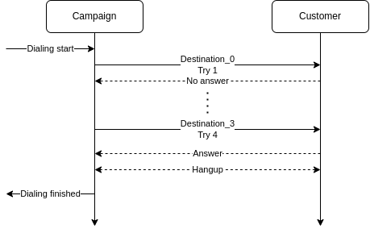

Overview
The VoIPBIN campaign API offers a comprehensive campaign service designed for massive outbound calling, including SMS, email, and SNS (Social Networking Service) messaging. These outbound campaigns are tailored to efficiently reach a large number of recipients for various purposes such as telemarketing, telesales, collections, and notifications.

Resource
The VoIPBIN’s campaign is composed of several essential resources that contribute to its effectiveness and functionality.

Queue: Represents the waiting place for calls and groups of agents who handle the calls.
Outdial: Contains the list of target destinations to which the campaign will reach out.
Outplan: Specifies the dialing strategy, determining how and when the calls will be initiated.
5W1H
The campaign adheres to the 5W1H principle, which focuses on answering specific questions for each resource:
Campaign: Defines the purpose of making calls and outlines the actions to be taken after a call is established (Why/What).
Queue (Agents): Identifies the agents or recipients who will receive the call after it is answered (Who).
Outdial: Specifies the destinations or recipients to whom the calls will be made (Where).
Outplan: Determines the approach and timing for making the calls (How/When).
Dialing strategy
Effectively reaching out to customers is of utmost importance, and VoIPBIN provides multiple retry options to ensure successful communication.
By employing these dialing strategies, the campaign enhances the chances of successfully connecting with recipients, optimizing outreach efforts, and ensuring effective communication with the target audience.